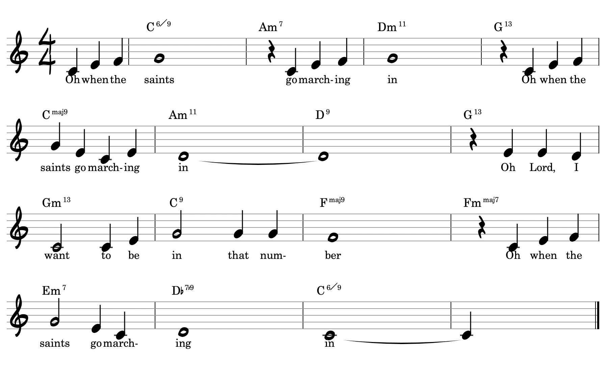
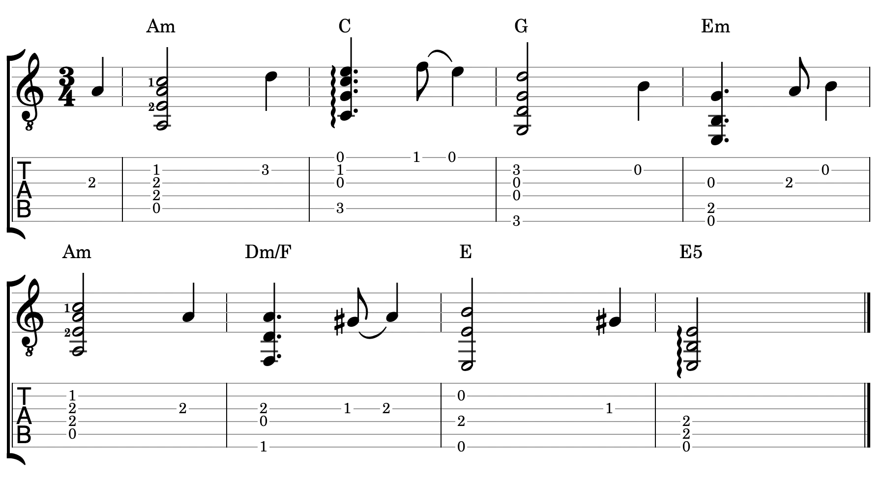
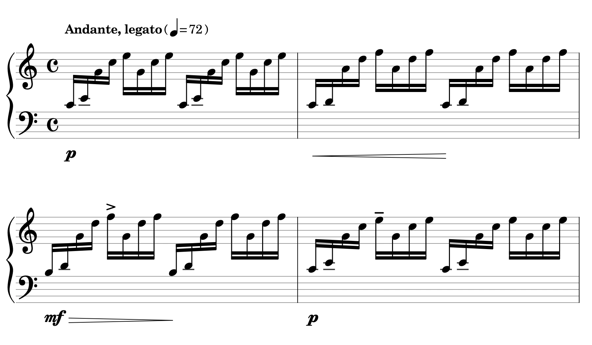
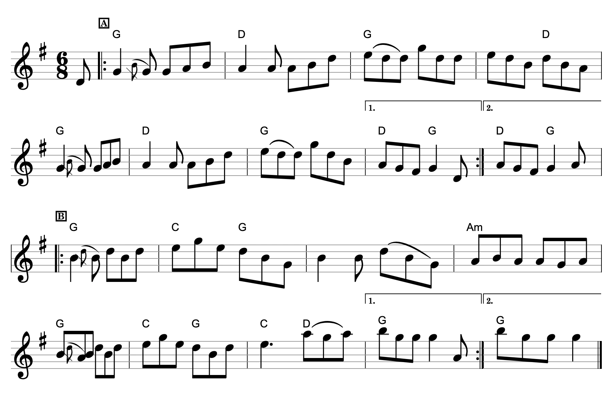
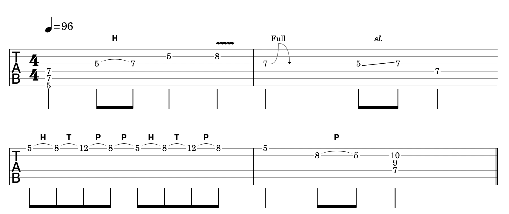
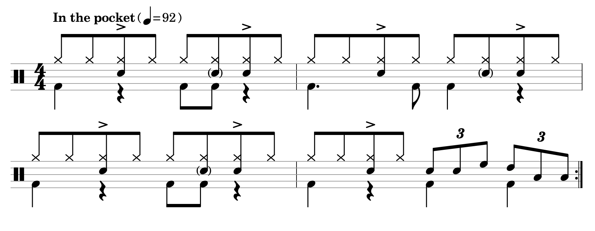
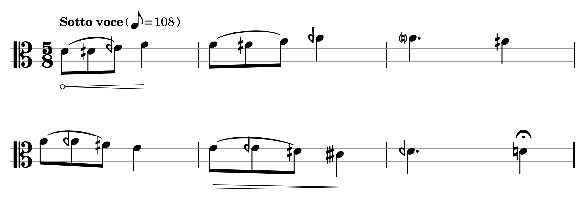

Visual test gallery
Keyboard
Minuet in G major
Christian Petzold
G major · 3/4
From the Notebook for Anna Magdalena Bach. Two independent keyboard voices share a grand staff, with fingering and phrasing marked above the melody.

Jazz lead sheet
When the Saints Go Marching In
Traditional African American spiritual
C major · 4/4
Follow the original words through a new set of changes. The ii–V leads to F, then the final D in the melody becomes the flat ninth of D♭7 before resolving to C.
Open live scoreView codeAbout the tune About reharmonization

Guitar tablature
Greensleeves
Traditional English air
A minor · 3/4
Follow the chord names above the melody. Dm/F puts F in the bass, and the closing E5 voicing uses just E and B. Roll that last chord from bass to treble.

Keyboard
Prelude in C major
Johann Sebastian Bach
BWV 846 · C major · 4/4
Follow each arpeggio across the two staves. The editorial tempo and dynamics suggest one way to shape the phrase. Lean into the accented F, then release onto E.

Fiddle
The Kesh Jig
Traditional Irish jig
G major · 6/8
Play A twice, then B twice, following the chord names above the fiddle line. On the first pass, take ending 1 and repeat. On the second pass, take ending 2.

Cello duet
Ode to Joy
Ludwig van Beethoven
Symphony No. 9 · D major · 4/4
Two cellos trade weight across the phrase. Give the opening note its full length, then follow the crescendo into each cadence.

Electric guitar
High Wire
Example piece
A minor pentatonic · 4/4
Strike the low power chord, then answer it with a full bend and release. On the next line, hammer to fret 8, tap fret 12 with the picking hand and pull off on the way down.

Drum set
Pocket Change
Example piece
Funk · 4/4
The hi-hat keeps eighths while the kick shifts underneath. Play the snare notes in parentheses quietly. Two descending triplets lead back to the downbeat.

Solo viola
Narrow Steps
Example piece
24-tone equal temperament · 5/8
Shade the repeated D a quarter tone sharp, halfway to D♯. The phrase climbs and turns back, approaching the final D natural from a quarter tone below.
